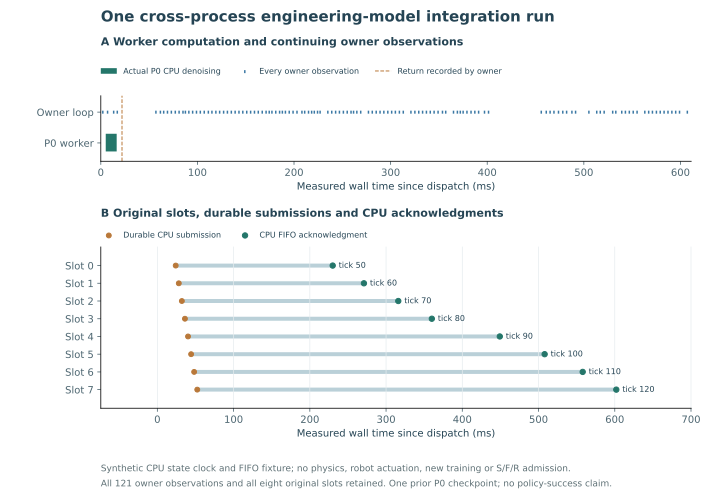

保存实际输入
公共观测包与模型收到的输入逐字节核对。冻结前缀、输入摘要和八个动作槽的原定 tick。
本次输入：40×64 RGB、本体状态、名义偏移与声明 mask。2026.10.16 / CPU ENGINEERING EVIDENCE
一个真实子进程，一次既有 P0 工程模型推理。开始时的输入保持冻结，返回后的八行动作逐项接受当前状态检查，并经过持久化提交、CPU 队列和原始回执。
01 / WHAT CHANGED
推理开始之后产生的状态不能补入模型原输入；模型返回时，执行守卫仍须检查当前时刻、所属 actor 与 FIFO。两种时间用途各自留痕。
公共观测包与模型收到的输入逐字节核对。冻结前缀、输入摘要和八个动作槽的原定 tick。
本次输入：40×64 RGB、本体状态、名义偏移与声明 mask。子进程运行既有工程模型。主进程继续写入合成状态，墙钟时间独立保存。
这次观察到计算与两条状态记录重叠；不是持续物理时钟证明。逐行重新检查，先持久化提交，再发送 CPU FIFO。外部 RAW 保存回执后，才进行正常记录的资格检查。
未重排动作所属者，未改写原定 tick，未把回执称为物理效果。02 / ACTUAL TRACE

11.324489 ms；模型参数与 checkpoint 前后相同。主进程在计算区间内实际记录 tick 2 和 tick 3。
模型于 tick 0 开始，tick 4 记录返回。八个原定动作 tick 为 50、60、70、80、90、100、110、120。
夹具映射为 1 ms/tick，但到 tick 121 的实测墙钟约 607.141 ms；不能据此报告 1 kHz 控制率或截止时间精度。
03 / INDEPENDENT VERIFICATION
作者测试 41 项通过；独立行为测试共有 21 个案例、跨版本执行 41 次。最终源码的 62 项只读语义回放和负例检查通过。它们不是新的物理实验次数。
实际模型案例保存 143 条事件。独立核对输入、八行输出、所属 actor、原定 tick、提交与发送顺序，以及完整 CPU 回执。
初始审查漏过的“当前状态不安全但已获授权停止”边界已通过 RED→GREEN 修正，旧失败和审查时序均保留。
当前版本预留事件数量，却没有保证未来序列化字节与 CASE_END 空间。独立反例中，接受任务后，结束记录仍可被字节上限拒绝。
该反例没有发生不安全写入，已有前缀保持完整，但这不足以保证采集器能正常关闭。下一版本先补全字节预留，再冻结原生接入协议。
查看保留的容量反例 ↗04 / SCIENTIFIC FRONTIER
我们要检验：同信息、同预算下，显式残余事件账本与经过验证的学生状态恢复经验，能否提高完整任务成功率，并在关闭教师、清空上下文后保留到共享权重。此次只补上其中的 CPU 采集环节。
输入快照、异步返回、逐行动作与原始回执的有限 CPU 案例；既有工程模型只推理一次。
未来字节与结束空间预留 → 原生时钟和动作接口 → 独立物理终点 → 合格 S/F/R 数据。
M/B3 仍 UNTESTED。P0 不是语言条件 VLA；本轮没有策略优势、任务泛化或真机化学结果。
05 / SOURCE-BOUND ARTIFACTS